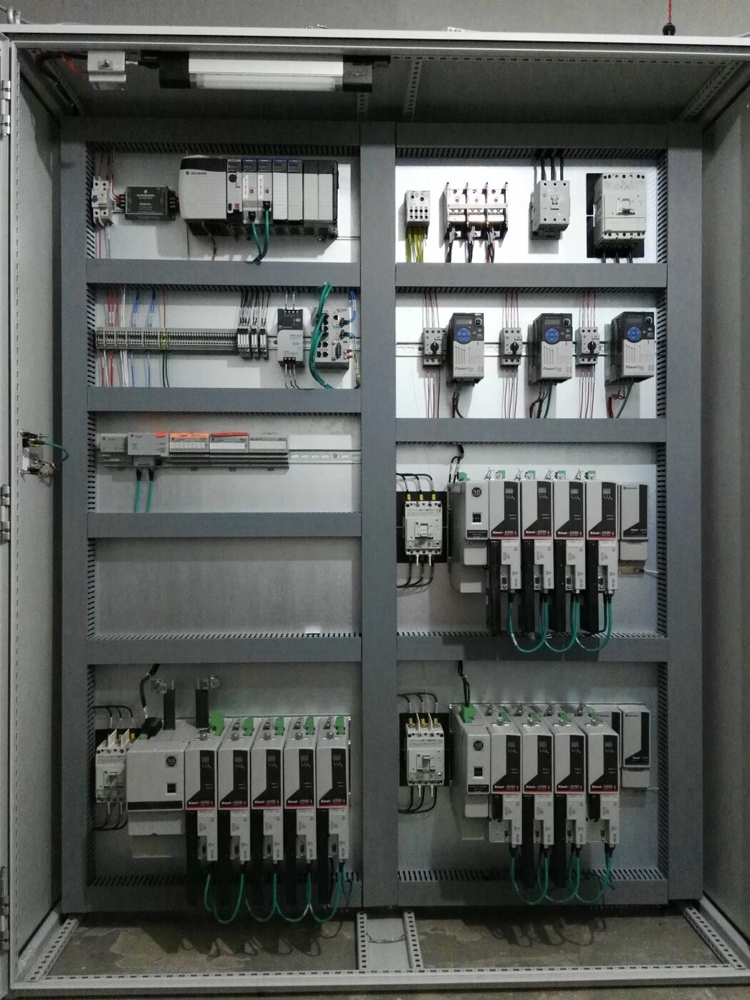
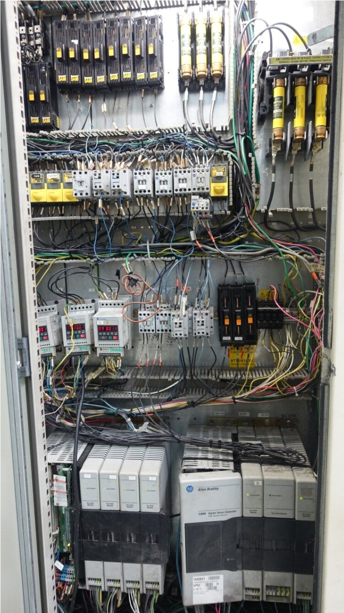

A surgical operating-room drape folding machine was running on a discontinued Allen-Bradley SLC 500 platform with obsolete 1394 motion drives — a serious unplanned-downtime risk once spare parts ran out. I migrated the full motion system — 8 coordinated machine axes implemented using 13 servo drives/motors — to ControlLogix and Kinetix 6500 in a 14-day window, without giving up a single sheet per minute of production rate.
8 coordinated machine axes, implemented using 13 servo drives/motors: the line's motion functions — Unwinder, Folders/AuxPull, Main Pull (master axis), Cross-Cutter (running a non-linear electronic-cam profile), Separator, Diverter, Crossfolder 1 & 2, PlateFolders, Stackers and Collector — are synchronized off the Main Pull master axis, running up to 40 sheets per minute. (The project's technical documentation names more individual mechanical stations than motion axes and more servo drives/motors than named axes; some stations are geared from, or share, a single servo axis. The original delivery record states both "8-axis" and "13 servo drives" without itemizing exactly which drives map to which named axis, so that precise mapping isn't reconstructed here — only the two headline counts are stated, each accurately, as the source documents them.)

